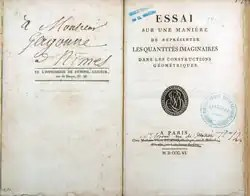
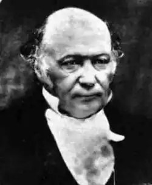
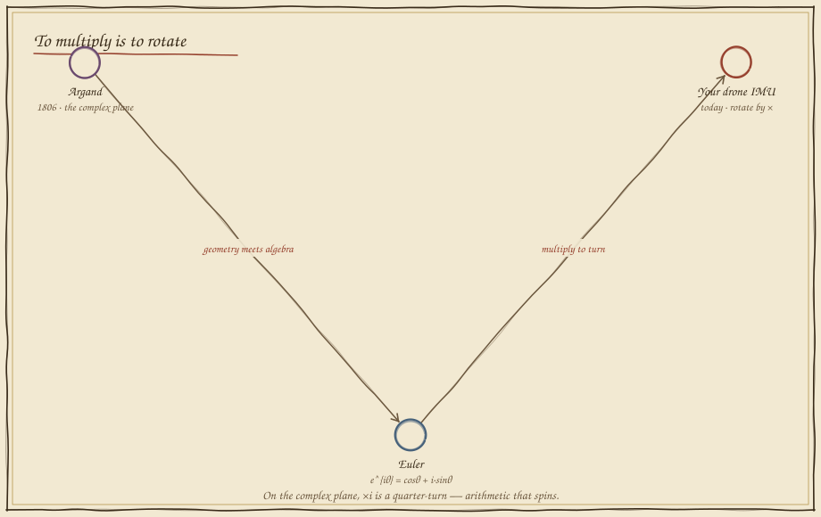
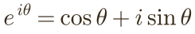

Numbers That Rotate
In which multiplication stops making things bigger and starts making them turn, and the most beautiful equation in mathematics turns out to live inside your drone.
Half of a flip
On the number line, multiplying by −1 flips +1 all the way to −1 — a half-turn, 180°. Here is the puzzle that stumped mathematicians for centuries: what single number, applied twice, performs that flip? Its square would have to be −1 — and no number on the line squares to a negative. Try it.
Step off the line into the plane and it appears at once: a quarter-turn upward lands you at a new point, i, and turning again lands you at −1. So i × i = −1 — the impossible number is simply a 90° rotation. Multiplication just learned to turn.
To multiply is to rotate
For 250 years these were "imaginary" numbers — useful, distrusted, unpicturable. Then a Parisian bookkeeper drew them, and a Swiss master bound them to geometry with a single line so perfect it still stops people in their tracks.




Multiply: angles add, lengths scale
On Argand's plane a complex number is an arrow with a length and an angle. The magic is in multiplication: to multiply two of them, you add their angles and multiply their lengths. Drag the arrow, choose what to multiply by, and watch it swing.

Spin the arm with a multiplication
Return to Folio 05's arm — but rotate it now the complex way. Treat each link as a complex number; multiply by eiθ and it turns by θ, no sine or cosine in sight. Stack two rotations by multiplying the factors, and their angles simply add. Aim the hand at the mark.
The hand reaches the mark when the two rotations, multiplied, point it there — and notice the elbow angle simply adds to the shoulder's, exactly because multiplying complex numbers adds their angles. This is why spacecraft and drones store orientation as things you multiply, not angles you add by hand: composition comes for free.
What you can now build
Complex numbers are the compact language of rotation and oscillation: phase in a signal, the spin of an AC motor, the poles of a controller (Folio 19), the frequencies of Fourier (Folio 22), and — grown one dimension — the quaternions that fly every drone. With them, Stage III — Describing Motion Exactly is complete: your robot can add motions as vectors, turn them with matrices and multiplications, take their rate with derivatives, and accumulate them with integrals. Stage IV opens the robot's bloodstream — linear algebra, Jacobians, and the equations of change.
Field exercise: on graph paper, plot the point (0, 1) — that is i. Multiply it by i (rotate 90°) and you land on (−1, 0). Again, and again: i, −1, −i, 1 — four multiplications, one full circle. You have watched arithmetic go around.
return to the codex map revisit folio 09